9월8일 갱신된 기존 plot_duet_aligned_timeline.py → plot_aligned_step로 직접 그렸습니다.
DS/PS를 합치지 않고 원래 event 이름과 색/무늬를 유지합니다. P1 executor 등 새 label에는 식별 색을 추가했습니다.
DS/PS graph 막대는 K1/K2 횟수만큼 흰 점선으로 등분했습니다. 개별 forward 실측 경계가 아니라 횟수 안내입니다.
현재 요청과 step을 엄격히 구분하고, cache wait와 겹친 직전 draft step도 포함했습니다.
모델별 P1/P2/miss 중앙 대표 PDF (14쪽) · p25/p50/p75 전체 (41쪽) · 모든 표시 이벤트의 실제 시간 · 설명
기존 renderer의 0.02ms 미만 막대 최소 표시 폭은 유지합니다. 실제 시간은 CSV를 따르며 겹치는 부모·자식 막대를 합산하지 않습니다.
준비 과정을 숨기기 위한 phase 통합이나 시계 이동은 없습니다. 다만 profile 자체가 phase 전체를 한 CUDA graph로 기록하므로 graph 안의 forward별 시간은 알 수 없습니다.
p2_prepare 같은 공통 helper는 DS에서도 쓰여 같은 label이 두 번 나올 수 있습니다.
측정 자료는 앞과 동일한 ver1.0·설정당4턴입니다. Code34B 12/6은 miss 표본0개라 해당 그림이 없고, 16/6은2개뿐입니다.
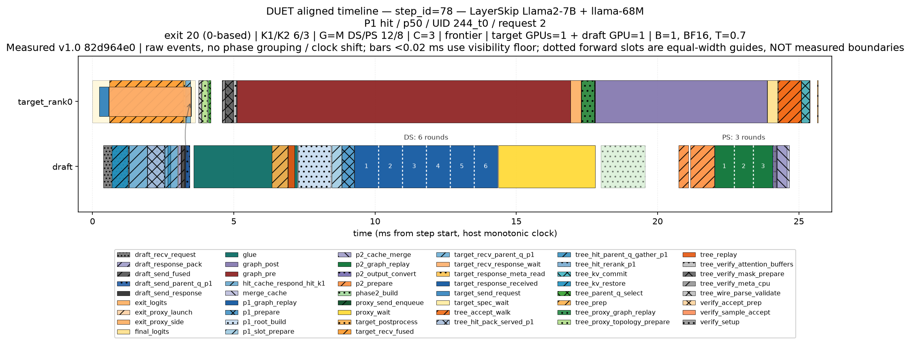
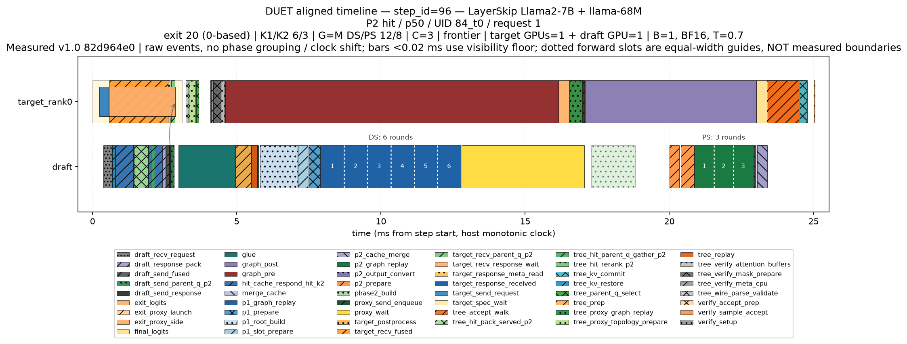
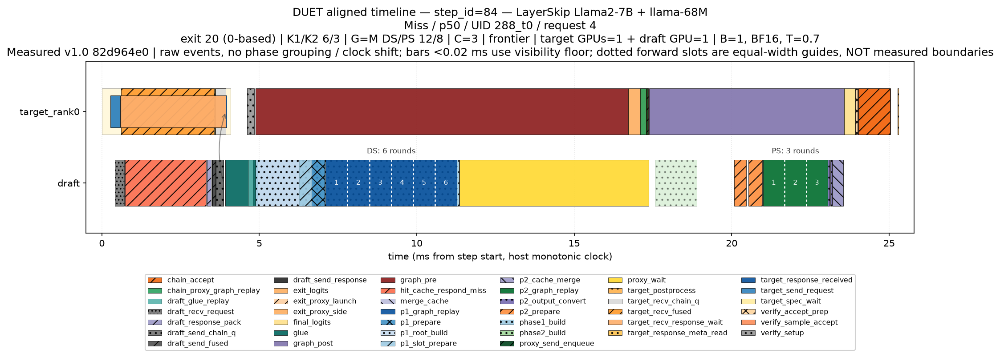
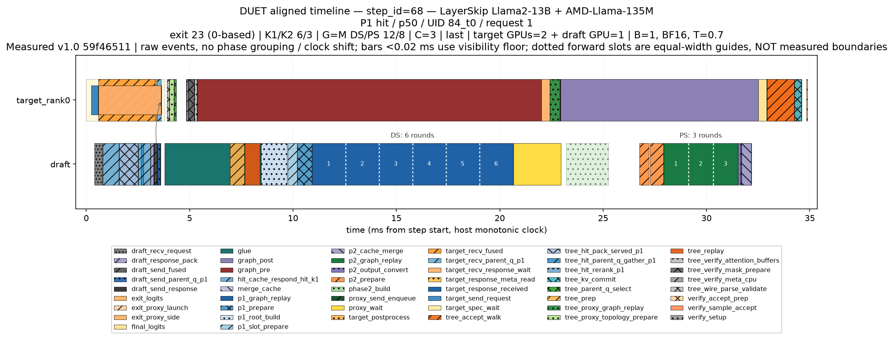
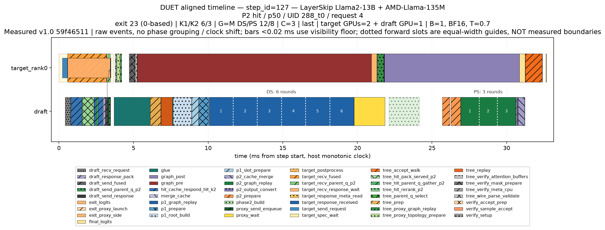
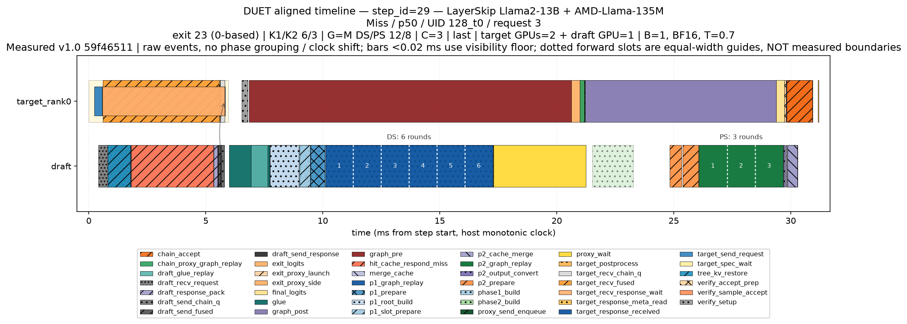
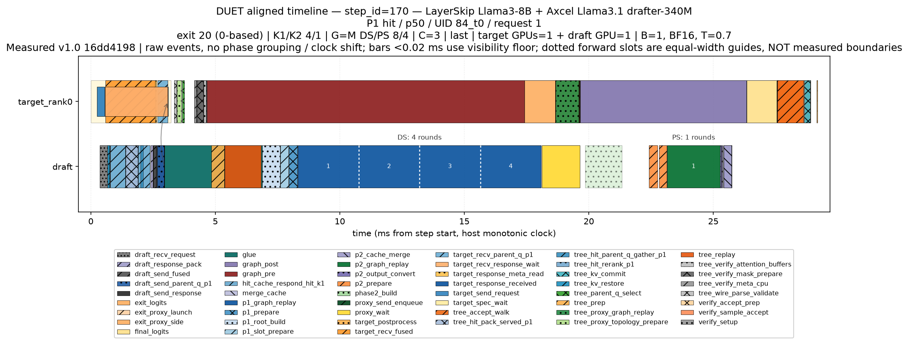
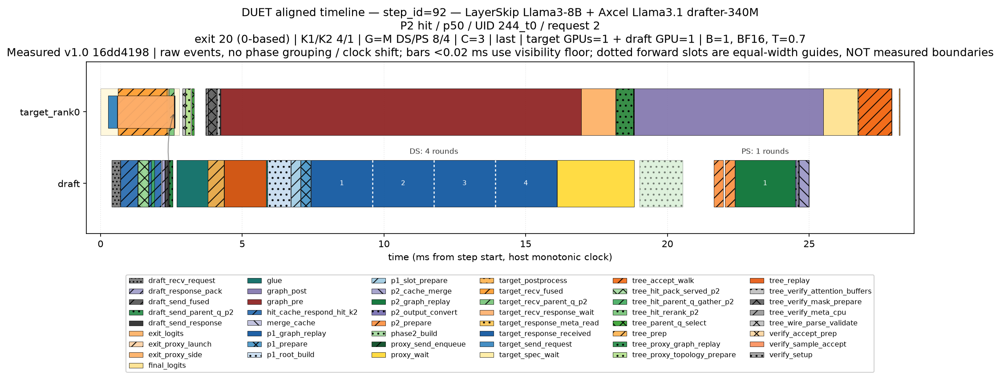
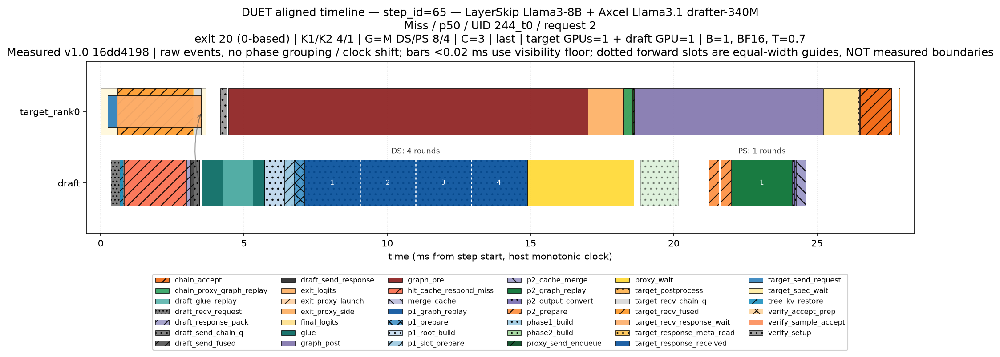
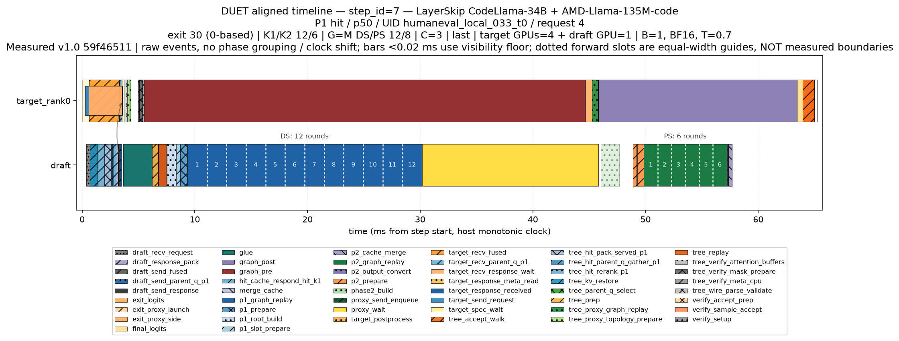
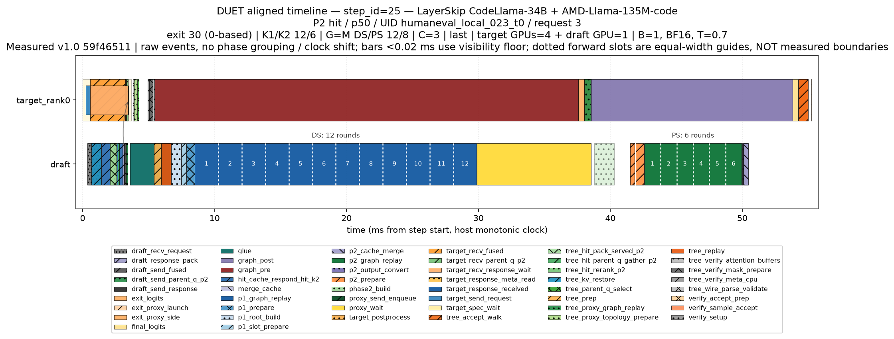
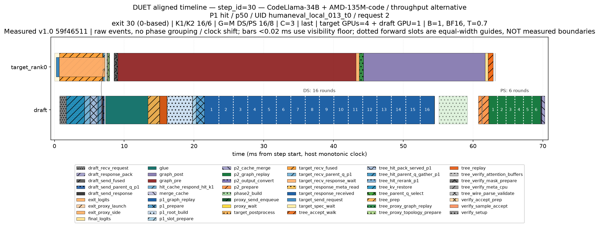
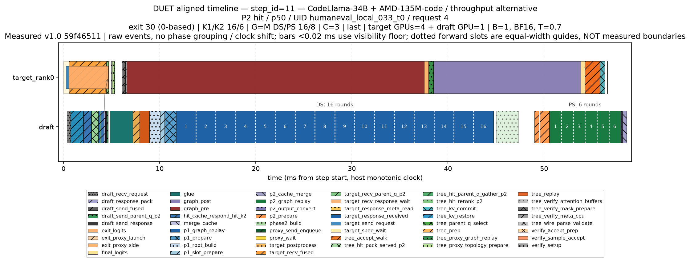
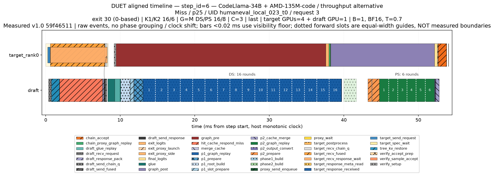